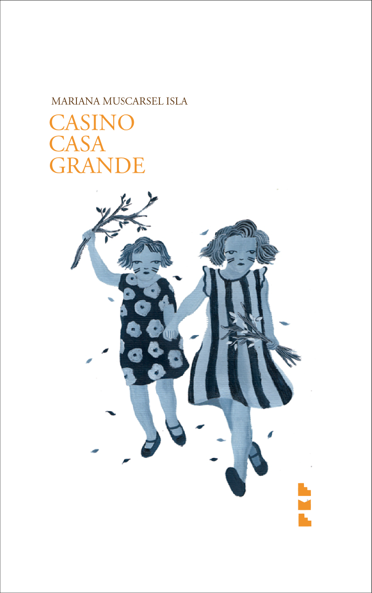

Bio
Mana Muscarsel Isla nació en 1987 en Fiske Menuco (General Roca), Patagonia, Argentina.
Es escritora, performer, compositora y psicóloga especialista en géneros y sexualidades.
Sus obras han sido publicadas en Argentina, México, España y los Estados Unidos.
Música

Volumen X

El Verano Más Triste

Un Regalo de Cuento

La Venganza de Oh Criatura

Barrio Chico

Manada
Libros


La Ruptura No Será Televisada
Poesía sobre la ruptura, el afecto y la desilusión romántica desde una perspectiva feminista y queer.
Ediciones
- Palíndroma, México, 2020
- Ediciones Liliputienses, España, 2022 · editorial

Cómo Sé Que Mi Perro No Se Está Muriendo
Ensayo sobre la experiencia afectiva cotidiana, el cuidado y la incertidumbre.
Ediciones
- Mandrágora Editora, Argentina, 2024 · comprar AR · comprar intl
Notas
Entrevistas
Psicología
Psicología y acompañamiento con perspectiva queer y feminista.
queerpsi.com →